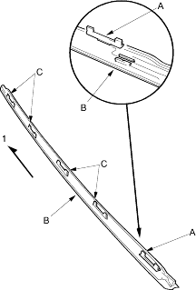
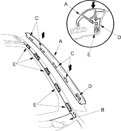

- Scrape or wipe the excess adhesive off with a putty knife or towel. To remove adhesive from a painted surface or the windshield, wipe with a soft shop towel dampened with alcohol.
- Let the adhesive dry for at least 1 hour, then spray water over the windshield and check for leaks. Mark leaking areas and let the windshield dry, then seal with sealant:
- Let the vehicle stand for at least 4 hours after windshield installation. If the vehicle has to be used within the first 4 hours, it must be driven slowly.
- Keep the windshield dry for the first hour after installation.
- Reinstall the cowl covers.
- Install the clip (A) on both side mouldings (B). If the clip portions (C) of the moulding are damaged, replace the moulding.

- Top of moulding
- On both sides of the windshield, set the bottom edge of the side moulding (A) under the cowl cover (B), then align the clips (C and D) with the retainers (E) and push on the clip portions of the moulding until the moulding is fully seated on the windshield.

- Reinstall all remaining removed parts. Advise the customer not to do the following things for 2 to 3 days:
- Slam the doors with all the windows rolled up.
- Twist the body excessively (such as when going in and out of driveways at an angle or driving over rough, uneven roads).